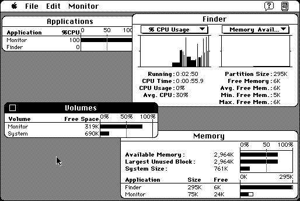

Download
monitor1.53.zip (29K) Monitor 1.5-3 repackaged into a zipped hfs disk image and checksum file. The disk image can be mounted with Mini vMac.
monitor1.53.sit.hqx (37K) Monitor 1.5-3 in the original format.
copyright: Mark Alldritt
mod date: May 6, 1994
license: Freeware
Presents "a number of different types of information including CPU utilization, memory usage and disk space availability." Requires System 7.

If you find these downloads useful, please consider helping the Gryphel Project, which hosts them.
Here are the md5 checksums for the downloads, signed with Gryphel Key 5:
--------- GRY SIGNED TEXT --------- 6783eae0270c667ad6bb4d7e979f58a7 monitor1.53.sit.hqx 2407a6b8c9fcc85a9116c5883c543b2b monitor1.53.zip ------- BEGIN GRY SIGNATURE ------- Gry/4Xa8CFcUzxdN/MmgBkdIp+wmohjmJdl9+lxoAHq2DhdufMA2yCGvWYDtAtfH y0PdpfK2ZGgvDWqUBv/ZgcOck/Ch6zcvqWTlRpS6NAvu70WDfgJ97DilhtiWfxCo 0S/qU+wvZj+m7IvqpoxFBdJfoByW00CH4Eqcpb+8ihK7HweDE72ErsF5U92Syoyu -------- END GRY SIGNATURE --------